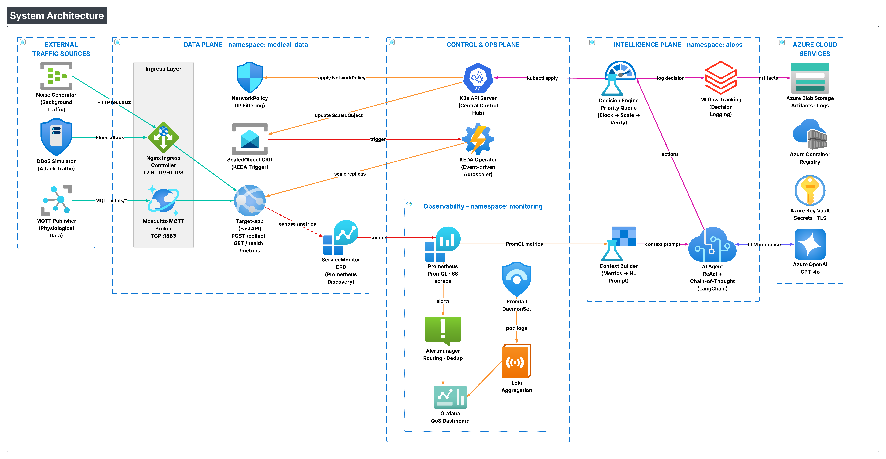
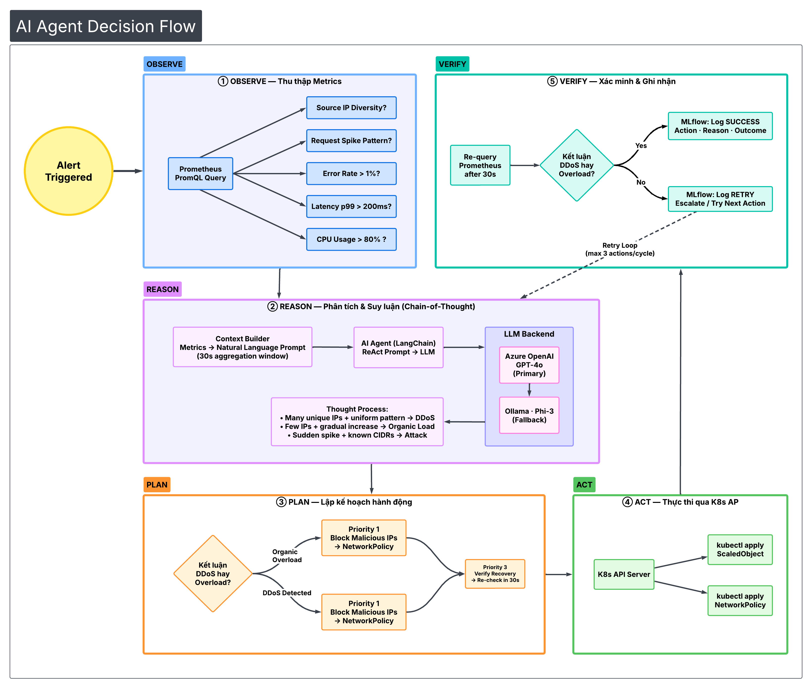

Thiết kế và Triển khai Nền tảng DevSecOps tích hợp MLOps để Vận hành Hệ thống Agentic AIOps, Đảm bảo Chất lượng Dịch vụ (QoS) cho Dữ liệu Sinh hiệu Thời gian thực
Đề tài tập trung vào bài toán đảm bảo Chất lượng Dịch vụ mạng (QoS) cho dữ liệu sinh hiệu trong mạng Internet vạn vật Y tế (IoMT). Cụ thể, hệ thống cần duy trì độ trễ truyền tải < 200ms cho các gói tin sinh hiệu (nhịp tim, SpO2, huyết áp) ngay cả trong điều kiện mạng biến động mạnh — bao gồm tình trạng cạnh tranh băng thông, các cuộc tấn công từ chối dịch vụ (DDoS) hay sự gia tăng đột biến số lượng kết nối thiết bị [5].
Các phương pháp giám sát truyền thống dựa trên ngưỡng tĩnh bộc lộ nhiều hạn chế: phản ứng chậm, thiếu linh hoạt và phụ thuộc vào con người. Điều này đặt ra nhu cầu cấp thiết về một hệ thống vận hành thông minh (AIOps) có khả năng tự động điều phối tài nguyên theo thời gian thực [4].
Giải pháp đề xuất là xây dựng một hệ thống Agentic AIOps — AI Agent tự chủ có khả năng phân tích ngữ cảnh thời gian thực, phân biệt giữa tải cao hợp lệ và tấn công DDoS, từ đó chủ động điều phối tài nguyên thông qua cơ chế Autoscaling và Traffic Filtering. Hệ thống được vận hành trên nền tảng DevSecOps an toàn với quy trình MLOps chuẩn hóa.
Tiêu đề tiếng Anh: Design and Implementation of a DevSecOps Platform Integrated with MLOps for Operating an Agentic AIOps System to Ensure Quality of Service (QoS) for Real-Time Physiological Signal Data.
Trong mạng IoMT, dữ liệu sinh hiệu yêu cầu tính thời gian thực nghiêm ngặt với độ trễ lý tưởng dưới 200ms. Bất kỳ sự chậm trễ nào đều có thể dẫn đến bỏ lỡ "thời điểm vàng" cấp cứu bệnh nhân. Tuy nhiên, hạ tầng mạng y tế hiện đại đối mặt với nhiều thách thức [5]:
Lưu lượng ưu tiên cao (sinh hiệu) phải chia sẻ băng thông với dữ liệu nhiễu: cập nhật hệ thống, video giám sát, báo cáo định kỳ.
Các cuộc tấn công DDoS có thể làm nghẽn hoàn toàn đường truyền, khiến dữ liệu sinh hiệu không thể đến được trung tâm xử lý.
Số lượng thiết bị IoMT tăng đột biến (ví dụ: tình huống khẩn cấp tại bệnh viện) tạo ra tải không dự đoán trước.
Các phương pháp giám sát dựa trên ngưỡng tĩnh (static threshold) bộc lộ nhiều hạn chế như: phản ứng chậm, thiếu linh hoạt và phụ thuộc vào con người. Điều này đặt ra nhu cầu về hệ thống vận hành thông minh (AIOps) có khả năng tự động điều phối tài nguyên theo thời gian thực [4].
Qua khảo sát các công bố khoa học gần đây (2023–2025):
| Nghiên cứu | Đóng góp chính | Khoảng trống |
|---|---|---|
| MLHOps — Khattak et al. [1] | Chuẩn hóa quy trình vận hành AI trong y tế | Chủ yếu quản trị mô hình chẩn đoán, thiếu các giải pháp can thiệp sâu vào hạ tầng mạng |
| AI-Augmented DevSecOps — Mittal [2] | Phát hiện lỗ hổng bảo mật tự động trong pipeline DevSecOps | Thiếu cơ chế tự động khắc phục sự cố (chỉ dừng lại ở phát hiện) |
| healthMLsec — Osama et al. [5] | Đánh giá lỗ hổng an ninh trong hệ thống y tế bằng ML | Mạnh về phát hiện lỗ hổng nhưng thiếu cơ chế tự động khắc phục; chỉ dừng ở đánh giá rủi ro |
| Autonomous Agents — Tamanampudi [3] | Mô hình AI Agent tự phục hồi cho DevOps | Chưa tích hợp trong quy trình DevSecOps an toàn, chưa tuân thủ chuẩn y tế |
| Medical MLOps — de Almeida et al. [4] | Framework MLOps cho AI y tế, khuyến nghị tuân thủ tiêu chuẩn lâm sàng | Khuyến nghị chung, chưa triển khai hệ thống can thiệp thời gian thực vào hạ tầng |
| AI Deployment in Healthcare — Venkata [6] | Khẳng định vai trò không thể thiếu của MLOps trong triển khai AI y tế an toàn | Khuyến nghị tổng quan, chưa tích hợp với hệ thống AI Agent tự chủ can thiệp hạ tầng |
| ML for QoS — Serag et al. [7] | Chứng minh hiệu quả vượt trội của ML trong phân loại lưu lượng mạng tối ưu QoS | ML truyền thống (phân loại), chưa có khả năng suy luận nguyên nhân gốc rễ hay ra quyết định xử lý phức tạp |
Gần đây, Serag et al. [7] đã chứng minh hiệu quả vượt trội của việc áp dụng Machine Learning trong việc phân loại lưu lượng mạng để tối ưu hóa QoS so với các phương pháp truyền thống. Đồng thời, Venkata [6] cũng khẳng định vai trò không thể thiếu của MLOps trong việc đảm bảo an toàn cho các mô hình AI y tế. Tuy nhiên, chưa có nghiên cứu nào kết hợp đồng thời ba yếu tố: (i) AI Agent tự chủ có khả năng suy luận và can thiệp hạ tầng, (ii) quy trình DevSecOps đảm bảo bảo mật, (iii) quy trình MLOps giám sát độ tin cậy của AI.
Giải pháp đề xuất: Đồ án sẽ lấp đầy các khoảng trống trên bằng cách xây dựng một nền tảng thực nghiệm tích hợp: sử dụng Agentic AIOps (AI tự chủ dựa trên LLM) có khả năng không chỉ phân loại mà còn suy luận nguyên nhân và ra quyết định xử lý phức tạp để tự động đảm bảo QoS mạng, được quản lý chặt chẽ bởi quy trình DevSecOps (để bảo mật hạ tầng) và MLOps (để giám sát độ tin cậy của AI).
Duy trì độ trễ dữ liệu sinh hiệu < 200ms và tỷ lệ lỗi truyền tải < 1% cho luồng dữ liệu y tế trong điều kiện mạng biến động (tải cao, tấn công DDoS, bùng nổ kết nối).
| Tầng | Mục tiêu | Công cụ/Kỹ thuật |
|---|---|---|
| Hạ tầng | Triển khai cụm AKS với khả năng mô phỏng luồng dữ liệu hỗn hợp (Critical vs. Noise Traffic) và giả lập tấn công mạng | Azure AKS, Terraform IaC, MQTT, HTTP |
| Trí tuệ | Phát triển AI Agent (Agentic AIOps) đóng vai trò điều phối nhằm giữ
độ trễ < 200ms thông qua: • Autoscale: Tương tác với KEDA dựa trên ngữ cảnh QoS (độ trễ, lỗi/timeout, dấu hiệu hàng đợi) thay vì chỉ dựa CPU/RAM • Traffic Blocking/Filtering: Áp dụng NetworkPolicy lọc bỏ lưu lượng bất thường, ưu tiên và bảo vệ băng thông cho dữ liệu y tế |
Azure OpenAI (GPT-4o), LangChain, ReAct pattern |
| Vận hành | Thiết lập Pipeline CI/CD tự động quét lỗ hổng bảo mật cho mã nguồn và Container. Giám sát lịch sử quyết định AI, cảnh báo khi AI hoạt động sai lệch | GitHub Actions, Trivy, SonarCloud, MLflow |
Hệ thống được thiết kế theo mô hình Microservices trên nền tảng Kubernetes (AKS), phân tách rõ ràng thành 3 tầng kiến trúc:
namespace: medical-data
Xử lý luồng dữ liệu thực tế. Bao gồm: Nginx Ingress Controller (HTTP L7), Mosquitto MQTT Broker (TCP LoadBalancer), target-app (FastAPI), NetworkPolicy, ScaledObject CRD.
AI Agent KHÔNG can thiệp trực tiếp vào tầng này.
namespace: aiops
AI quan sát và suy luận. Bao gồm: Prometheus (PromQL), Context Builder, AI Agent (LangChain ReAct + CoT), Decision Engine, MLflow Tracking, Local LLM (Ollama/Phi-3 — thực nghiệm).
Thực thi quyết định của AI. Bao gồm: K8s API Server, KEDA Operator (keda-system namespace), Grafana, Alertmanager, Promtail + Loki, GitHub Actions CI/CD.
Mọi thao tác đều đi qua K8s API Server.

Nguyên tắc thiết kế quan trọng: AI Agent chỉ can thiệp vào Control Plane, không xử lý trực tiếp Data Plane. Mọi thao tác đều thông qua K8s API Server. Ưu tiên: Block IP trước → Scale sau → Verify kết quả.
Trong khi Serag et al. [7] sử dụng các mô hình ML truyền thống để phân loại lưu lượng, nhóm đề xuất bước tiến mới là sử dụng LLM (Agentic AI) để không chỉ phân loại mà còn suy luận nguyên nhân và ra quyết định xử lý phức tạp hơn.
| Mô hình | Vai trò | Chi tiết |
|---|---|---|
| Cloud LLM (Baseline) | Chuẩn đối sánh — độ chính xác cao nhất | Azure OpenAI GPT-4o, tính theo token |
| Local LLM (Thực nghiệm) | So sánh trade-off: chính xác vs tốc độ vs tài nguyên | Ollama + Phi-3 / Qwen2, chạy trong cụm K8s |
Agent sử dụng mô hình ReAct (Reasoning + Acting) kết hợp Chain-of-Thought (CoT), thực hiện vòng lặp liên tục:

Agent phân tích tổ hợp Metrics (CPU, Latency, Error Rate, Source IP diversity) để phân biệt giữa: tải cao thật (organic overload) và tấn công DDoS (sudden spike, uniform pattern, many unique IPs).
Áp dụng Chaos Engineering: chủ động gây nhiễu bằng giả lập DDoS và ngắt đột ngột Pods để kiểm chứng khả năng tự phục hồi.
| Tầng | Công nghệ | Vai trò |
|---|---|---|
| Hạ tầng | Azure Kubernetes Service (AKS) | Cụm Kubernetes chính trên Public Cloud |
| Terraform | Infrastructure as Code — đảm bảo tính nhất quán và tái lập | |
| Mosquitto (MQTT Broker) | Nhận dữ liệu sinh hiệu qua giao thức MQTT :1883 | |
| Nginx Ingress Controller | L7 HTTP/HTTPS reverse proxy | |
| Trí tuệ | Azure OpenAI (GPT-4o) | LLM Baseline cho suy luận AI Agent |
| Ollama + Phi-3 | Local LLM thực nghiệm trong cụm K8s | |
| Python + LangChain | Framework lập trình logic AI Agent (ReAct) | |
| Prometheus + PromQL | Thu thập metrics chuỗi thời gian, engine truy vấn | |
| Vận hành | KEDA | Event-driven Autoscaler — scale dựa trên Prometheus metrics |
| GitHub Actions | CI/CD Pipeline tự động Build, Scan, Deploy | |
| Trivy + SonarCloud | Container vulnerability scanning + SAST code quality | |
| MLflow | Theo dõi lịch sử quyết định AI, model registry | |
| Grafana | Dashboard trực quan hóa QoS, Agent decisions, cost | |
| Alertmanager + Promtail + Loki | Alert routing, log collection và aggregation |
| Chỉ số | Mục tiêu | Cách đo |
|---|---|---|
| Độ trễ gói tin sinh hiệu | < 200ms ngay cả khi CPU > 80% | histogram_quantile(0.99, request_duration_seconds) |
| Tỷ lệ lỗi truyền tải | < 1% cho luồng dữ liệu y tế | rate(http_requests_total{code=~"5.."}[1m]) |
| Chỉ số | Mô tả | Mục tiêu |
|---|---|---|
| Độ chính xác quyết định | % Agent đưa ra quyết định đúng (phân biệt Tải cao vs DDoS) | > 85% |
| Tỷ lệ ảo giác (Hallucination) | Tần suất Agent đưa ra lệnh sai cú pháp hoặc không tồn tại | < 5% |
| Hiệu quả chi phí | So sánh Cloud LLM (token cost) vs Local LLM (GPU cost) | Phân tích trade-off |
| Chỉ số | Mô tả | Mục tiêu |
|---|---|---|
| MTTR (Mean Time To Recovery) | Thời gian từ sự cố đến khi hệ thống ổn định trở lại | Nhanh hơn xử lý thủ công 50% |
| Pipeline Security Gate | % lỗ hổng bị chặn trước khi deploy | > 95% Critical/High CVE bị block |
Sử dụng dữ liệu giả lập (Python scripts) thay vì thiết bị y tế thực (do vấn đề bảo mật y tế và chi phí thiết bị). Tuy nhiên, dữ liệu tuân thủ chuẩn giao thức MQTT và chuẩn dữ liệu HL7.
Azure OpenAI có độ trễ suy luận 1-2s, làm tăng nhẹ MTTD (phát hiện), nhưng KHÔNG tăng latency trên Data Plane.
Tài nguyên Lab hạn chế, Local LLM chỉ dùng phiên bản nén (Quantized/Mini) — chưa đạt hiệu năng tối ưu như Server chuyên dụng.
DDoS giả lập trong môi trường Lab cô lập (Isolated VNet) với lưu lượng giới hạn, tránh vi phạm chính sách Azure.
Đề tài tập trung vào xử lý ở tầng Cloud và Mạng (Backend/Network Layer), chưa bao gồm phần phát triển ứng dụng di động hay thiết bị đeo tay cho bệnh nhân.